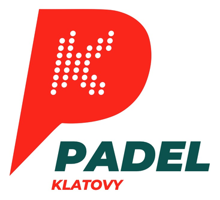
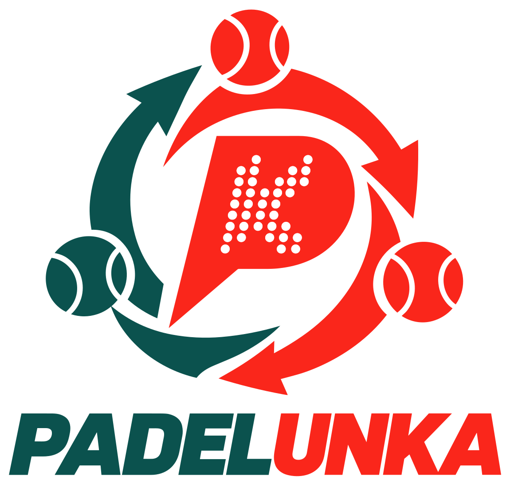

PADELUNKA
Tři v týmu. Dva na kurtu. Každý game společný.
Dva muži + jedna žena. Jedna hodina týmové hry.
Nový padelový formát pro hobby hráče. Střídáte se, fandíte si a sbíráte gamy pro svůj tým.
Princip na jednu minutu
Jak se hraje
-
1
Sestavíte trojici
Dva muži a jedna žena. Kapitán před zápasem určí, kdo je A, B a C.
-
2
Dva hrají, třetí fandí
Na kurtu je vždy dvojice z týmu. Třetí si odpočine na lavičce a podporuje spoluhráče.
-
3
Po lichém gamu se střídáte
Při každé změně stran, tedy po 1., 3., 5. gamu a dál. Oba týmy střídají naráz.
-
4
Každý game patří týmu
Nehrají se sety. Počítají se gamy celého týmu a po hodině vyhrává tým, který jich má víc.
Každý hraje s oběma spoluhráči. Ze tří dvojic je jedna mužská a dvě smíšené, takže to není klasický mix, kde je na kurtu pořád muž a žena.
Interaktivní ukázka
Kdo jde ven, kdo jde dovnitř
Jeden tým, jedna polovina kurtu, pohled shora. Síť je nahoře, základní čára dole. Pusťte si ukázku, nebo jděte krok po kroku.
Krok 1 z 32
1. game: podává váš tým
Úvodní dvojice A a B. A přijímá vpravo, B vlevo. Pořadí podání si určili A, potom B, takže první game podává A. C fandí na lavičce.
- Příjem vlevo
- B
- Příjem vpravo
- A
- Lavička
- C
- Podání týmu · 1. game
- A
Míček ukazuje, kdo podává, ne místo podání. Podávající během gamu podává střídavě zprava a zleva.
Kdo přichází, přebírá místo toho, kdo odchází — na příjmu i v pořadí podání. Hráč, který zůstává, svou stranu příjmu nemění.
Díky rotaci se každý postupně vystřídá vpravo i vlevo.
Výhody
15 výhod týmového hraní
I když zrovna nehraješ, pořád jsi ve hře.
- 01
Další zápas může přijít hned
Díky průběžnému střídání a odpočinku můžeš snáz navázat dalším zápasem. Záleží na tvé kondici a tempu hry.
- 02
Více společného hraní mužů a žen
Příležitost pro hráče, kteří hledají více smíšených akcí. Tým tvoří dva muži a jedna žena; v rotaci nastupuje také mužská dvojice.
- 03
Prostor pro nováčka
Do trojice můžeš začlenit méně zkušeného hráče. Má podporu obou spoluhráčů; při sestavování soupeřících týmů je třeba zohlednit úroveň.
- 04
Vyzkoušíš pravou i levou stranu
Přebíráním místa odcházejícího hráče se během rotace postupně vystřídáš na obou příjmových stranách.
- 05
Přátelská atmosféra
Týmové střídání podporuje vzájemnou ohleduplnost a pohodové hraní.
- 06
Na výsledek jste tři
Odpovědnost za společný výsledek se rozkládá mezi tři spoluhráče a různé dvojice.
- 07
Učíš se i z lavičky
Při sledování hry zvenku si můžeš všimnout situací a možností, které ti přímo na kurtu unikají.
- 08
Čas na uklidnění
Po nepovedeném úseku získáš chvíli na vydechnutí a můžeš se vrátit s čistou hlavou.
- 09
Různé herní role
S každým spoluhráčem hledáš jinou souhru, rozdělení úkolů a taktiku.
- 10
Podpora oběma směry
Jednou spoluhráč fandí tobě, za chvíli povzbuzuješ ty jeho. Každý zažije obě role.
- 11
I mimo kurt zůstáváš ve hře
Pauza tě neodpojí od zápasu. Sleduješ společný výsledek a dál jsi součástí svého týmu.
- 12
Lépe si naplánuješ čas
Základ zápasu tvoří hodinový formát, který se snáz vejde do programu. Počítej i s případným dohráním gamu a organizací akce.
- 13
Vlastní týmová identita
Název, dresy a společný příběh dávají trojici další důvod vracet se i do dlouhodobé ligy.
- 14
Nové herní vazby
Zahraješ si s oběma spoluhráči a rozvíjíš souhru i mimo svou obvyklou dvojici.
- 15
Každá dvojice přispívá
Gamy získané kteroukoli dvojicí mají stejnou hodnotu. Společný výsledek propojuje všechny tři hráče.
Pro kluby a organizátory turnajů
Program, který se dá naplánovat
Pevně daná délka zápasu
Zápas trvá hodinu. Po skončení času se dohraje jen rozehraný game, takže víte, kdy se kurt uvolní.
Předvídatelný program turnaje
Hrací plán sestavíte dopředu po hodinách a kurtech. Hráči vědí, kdy nastupují, a vy víte, kdy turnaj skončí.
Šest hráčů na jednom kurtu
Za hodinu se na kurtu vystřídají dvě trojice, tedy šest hráčů místo čtyř.
24. října 2026 · Padel Klatovy
Začalo to v Klatovech.
Na podzim jsme PADELUNKU poprvé vyzkoušeli naostro. První pilot proběhl 24. října 2026 v Padel Klatovy. Reakce hráčů byly pozitivní, a tak formát dál ladíme a připravujeme z něj ligu.

Šumavská padelová hobby liga · připravujeme 2027
Postav trojici. V roce 2027 jdeme do ligy.
Připravujeme první ročník Šumavské padelové hobby ligy ve formátu PADELUNKA. Dva muži a jedna žena v každé nastupující trojici.
Termíny, ceny a přihlášky zatím nejsou stanovené. Zveřejníme je tady, jakmile budou hotové. Už teď ale můžete dát vědět, že máte zájem.
Hráči a týmy
Máte trojici, nebo ji teprve skládáte? Napište nám a ozveme se, až otevřeme přihlášky.
Kluby
Chcete u sebe uspořádat PADELUNKU nebo hostit ligová utkání? Domluvíme se na podrobnostech.
Pravidla v kostce
Co platí na kurtu
- Tým
- 3 hráči: dva muži a jedna žena. Na kurtu jsou vždy dva.
- Délka
- Hraje se hodinu. Po skončení času se dohraje rozehraný game.
- Počítání
- Žádné sety, průběžné skóre gamů, například 9 : 7. Při 40 : 40 golden point.
- Střídání
- Při změně stran, tedy po každém lichém gamu. Oba týmy střídají současně.
- Dvojice
- AB, potom BC, potom CA a znovu AB. Kdo je A, B a C, určí kapitán před utkáním.
- Příjem
- Úvodní dvojice si určí pravou a levou stranu příjmu. Příchozí hráč přebírá stranu toho, kdo odešel. Zůstávající svou stranu nemění. Strana se počítá z pohledu hráčů k síti.
- Podání
- Úvodní dvojice si určí pořadí podání. Příchozí hráč přebírá místo odcházejícího v pořadí. Pořadí se nepřerušuje ani neurčuje znovu.
- Výsledek
- Vyhrává tým s více gamy. Remíza je platný výsledek.

PADELUNKA by PADELUN
První pilot: Padel Klatovy, 24. října 2026.
Chcete hrát PADELUNKU u sebe?
PADELUNKU chceme bezplatně rozšiřovat mezi hráče a kluby. Stačí trojice, kurt a hodina času.
Pokud ji chcete pořádat oficiálně pod názvem PADELUNKA, ozvěte se. Pošleme aktuální materiály a domluvíme, jak značku používat.